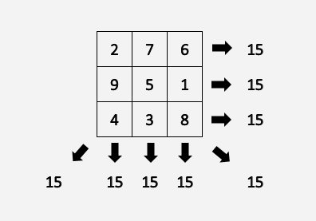

Exercise 58 - Magic Square
For a matrix to be a Magic Square, it must meet the following conditions:
- It must be a square.
- The sums of the rows, columns, and the two diagonals should all be equal.
For example:

Write a function which receives a 2D array, and tests whether it is a magic square: